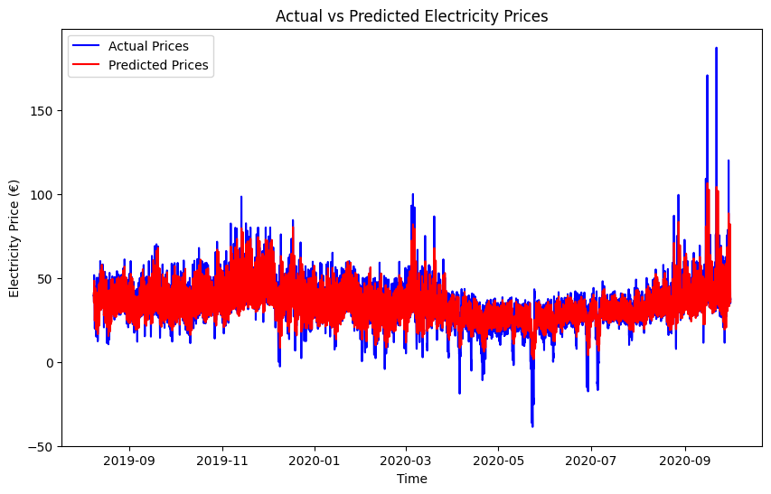

<!DOCTYPE html>


<html lang="en" data-content_root="./" >

  <head>
    <meta charset="utf-8" />
    <meta name="viewport" content="width=device-width, initial-scale=1.0" /><meta name="viewport" content="width=device-width, initial-scale=1" />

    <title>Electricity Pricing Time Series Analysis &#8212; My sample book</title>
  
  
  
  <script data-cfasync="false">
    document.documentElement.dataset.mode = localStorage.getItem("mode") || "";
    document.documentElement.dataset.theme = localStorage.getItem("theme") || "";
  </script>
  
  <!-- Loaded before other Sphinx assets -->
  <link href="_static/styles/theme.css?digest=dfe6caa3a7d634c4db9b" rel="stylesheet" />
<link href="_static/styles/bootstrap.css?digest=dfe6caa3a7d634c4db9b" rel="stylesheet" />
<link href="_static/styles/pydata-sphinx-theme.css?digest=dfe6caa3a7d634c4db9b" rel="stylesheet" />

  
  <link href="_static/vendor/fontawesome/6.5.2/css/all.min.css?digest=dfe6caa3a7d634c4db9b" rel="stylesheet" />
  <link rel="preload" as="font" type="font/woff2" crossorigin href="_static/vendor/fontawesome/6.5.2/webfonts/fa-solid-900.woff2" />
<link rel="preload" as="font" type="font/woff2" crossorigin href="_static/vendor/fontawesome/6.5.2/webfonts/fa-brands-400.woff2" />
<link rel="preload" as="font" type="font/woff2" crossorigin href="_static/vendor/fontawesome/6.5.2/webfonts/fa-regular-400.woff2" />

    <link rel="stylesheet" type="text/css" href="_static/pygments.css?v=03e43079" />
    <link rel="stylesheet" type="text/css" href="_static/styles/sphinx-book-theme.css?v=eba8b062" />
    <link rel="stylesheet" type="text/css" href="_static/togglebutton.css?v=13237357" />
    <link rel="stylesheet" type="text/css" href="_static/copybutton.css?v=76b2166b" />
    <link rel="stylesheet" type="text/css" href="_static/mystnb.4510f1fc1dee50b3e5859aac5469c37c29e427902b24a333a5f9fcb2f0b3ac41.css?v=be8a1c11" />
    <link rel="stylesheet" type="text/css" href="_static/sphinx-thebe.css?v=4fa983c6" />
    <link rel="stylesheet" type="text/css" href="_static/sphinx-design.min.css?v=95c83b7e" />
  
  <!-- Pre-loaded scripts that we'll load fully later -->
  <link rel="preload" as="script" href="_static/scripts/bootstrap.js?digest=dfe6caa3a7d634c4db9b" />
<link rel="preload" as="script" href="_static/scripts/pydata-sphinx-theme.js?digest=dfe6caa3a7d634c4db9b" />
  <script src="_static/vendor/fontawesome/6.5.2/js/all.min.js?digest=dfe6caa3a7d634c4db9b"></script>

    <script src="_static/documentation_options.js?v=9eb32ce0"></script>
    <script src="_static/doctools.js?v=9a2dae69"></script>
    <script src="_static/sphinx_highlight.js?v=dc90522c"></script>
    <script src="_static/clipboard.min.js?v=a7894cd8"></script>
    <script src="_static/copybutton.js?v=f281be69"></script>
    <script src="_static/scripts/sphinx-book-theme.js?v=887ef09a"></script>
    <script>let toggleHintShow = 'Click to show';</script>
    <script>let toggleHintHide = 'Click to hide';</script>
    <script>let toggleOpenOnPrint = 'true';</script>
    <script src="_static/togglebutton.js?v=4a39c7ea"></script>
    <script>var togglebuttonSelector = '.toggle, .admonition.dropdown';</script>
    <script src="_static/design-tabs.js?v=f930bc37"></script>
    <script>const THEBE_JS_URL = "https://unpkg.com/thebe@0.8.2/lib/index.js"; const thebe_selector = ".thebe,.cell"; const thebe_selector_input = "pre"; const thebe_selector_output = ".output, .cell_output"</script>
    <script async="async" src="_static/sphinx-thebe.js?v=c100c467"></script>
    <script>var togglebuttonSelector = '.toggle, .admonition.dropdown';</script>
    <script>const THEBE_JS_URL = "https://unpkg.com/thebe@0.8.2/lib/index.js"; const thebe_selector = ".thebe,.cell"; const thebe_selector_input = "pre"; const thebe_selector_output = ".output, .cell_output"</script>
    <script>DOCUMENTATION_OPTIONS.pagename = 'Electricity time series';</script>
    <link rel="index" title="Index" href="genindex.html" />
    <link rel="search" title="Search" href="search.html" />
    <link rel="prev" title="Classification and Linear Discriminant Analysis" href="LDA.html" />
  <meta name="viewport" content="width=device-width, initial-scale=1"/>
  <meta name="docsearch:language" content="en"/>
  </head>
  
  
  <body data-bs-spy="scroll" data-bs-target=".bd-toc-nav" data-offset="180" data-bs-root-margin="0px 0px -60%" data-default-mode="">

  
  
  <div id="pst-skip-link" class="skip-link d-print-none"><a href="#main-content">Skip to main content</a></div>
  
  <div id="pst-scroll-pixel-helper"></div>
  
  <button type="button" class="btn rounded-pill" id="pst-back-to-top">
    <i class="fa-solid fa-arrow-up"></i>Back to top</button>

  
  <input type="checkbox"
          class="sidebar-toggle"
          id="pst-primary-sidebar-checkbox"/>
  <label class="overlay overlay-primary" for="pst-primary-sidebar-checkbox"></label>
  
  <input type="checkbox"
          class="sidebar-toggle"
          id="pst-secondary-sidebar-checkbox"/>
  <label class="overlay overlay-secondary" for="pst-secondary-sidebar-checkbox"></label>
  
  <div class="search-button__wrapper">
    <div class="search-button__overlay"></div>
    <div class="search-button__search-container">
<form class="bd-search d-flex align-items-center"
      action="search.html"
      method="get">
  <i class="fa-solid fa-magnifying-glass"></i>
  <input type="search"
         class="form-control"
         name="q"
         id="search-input"
         placeholder="Search this book..."
         aria-label="Search this book..."
         autocomplete="off"
         autocorrect="off"
         autocapitalize="off"
         spellcheck="false"/>
  <span class="search-button__kbd-shortcut"><kbd class="kbd-shortcut__modifier">Ctrl</kbd>+<kbd>K</kbd></span>
</form></div>
  </div>

  <div class="pst-async-banner-revealer d-none">
  <aside id="bd-header-version-warning" class="d-none d-print-none" aria-label="Version warning"></aside>
</div>

  
    <header class="bd-header navbar navbar-expand-lg bd-navbar d-print-none">
    </header>
  

  <div class="bd-container">
    <div class="bd-container__inner bd-page-width">
      
      
      
      <div class="bd-sidebar-primary bd-sidebar">
        

  
  <div class="sidebar-header-items sidebar-primary__section">
    
    
    
    
  </div>
  
    <div class="sidebar-primary-items__start sidebar-primary__section">
        <div class="sidebar-primary-item">

  
    
  

<a class="navbar-brand logo" href="intro.html">
  
  
  
  
  
    
    
      
    
    
    
    <script>document.write(``);</script>
  
  
</a></div>
        <div class="sidebar-primary-item">

 <script>
 document.write(`
   <button class="btn search-button-field search-button__button" title="Search" aria-label="Search" data-bs-placement="bottom" data-bs-toggle="tooltip">
    <i class="fa-solid fa-magnifying-glass"></i>
    <span class="search-button__default-text">Search</span>
    <span class="search-button__kbd-shortcut"><kbd class="kbd-shortcut__modifier">Ctrl</kbd>+<kbd class="kbd-shortcut__modifier">K</kbd></span>
   </button>
 `);
 </script></div>
        <div class="sidebar-primary-item"><nav class="bd-links bd-docs-nav" aria-label="Main">
    <div class="bd-toc-item navbar-nav active">
        
        <ul class="nav bd-sidenav bd-sidenav__home-link">
            <li class="toctree-l1">
                <a class="reference internal" href="intro.html">
                    Emma Bewley
                </a>
            </li>
        </ul>
        <ul class="current nav bd-sidenav">
<li class="toctree-l1"><a class="reference internal" href="LDA.html">Classification and Linear Discriminant Analysis</a></li>
<li class="toctree-l1 current active"><a class="current reference internal" href="#">Electricity Pricing Time Series Analysis</a></li>
</ul>

    </div>
</nav></div>
    </div>
  
  
  <div class="sidebar-primary-items__end sidebar-primary__section">
  </div>
  
  <div id="rtd-footer-container"></div>


      </div>
      
      <main id="main-content" class="bd-main" role="main">
        
        

<div class="sbt-scroll-pixel-helper"></div>

          <div class="bd-content">
            <div class="bd-article-container">
              
              <div class="bd-header-article d-print-none">
<div class="header-article-items header-article__inner">
  
    <div class="header-article-items__start">
      
        <div class="header-article-item"><button class="sidebar-toggle primary-toggle btn btn-sm" title="Toggle primary sidebar" data-bs-placement="bottom" data-bs-toggle="tooltip">
  <span class="fa-solid fa-bars"></span>
</button></div>
      
    </div>
  
  
    <div class="header-article-items__end">
      
        <div class="header-article-item">

<div class="article-header-buttons">


<div class="dropdown dropdown-download-buttons">
  <button class="btn dropdown-toggle" type="button" data-bs-toggle="dropdown" aria-expanded="false" aria-label="Download this page">
    <i class="fas fa-download"></i>
  </button>
  <ul class="dropdown-menu">
      
      
      
      <li><a href="_sources/Electricity time series.ipynb" target="_blank"
   class="btn btn-sm btn-download-source-button dropdown-item"
   title="Download source file"
   data-bs-placement="left" data-bs-toggle="tooltip"
>
  

<span class="btn__icon-container">
  <i class="fas fa-file"></i>
  </span>
<span class="btn__text-container">.ipynb</span>
</a>
</li>
      
      
      
      
      <li>
<button onclick="window.print()"
  class="btn btn-sm btn-download-pdf-button dropdown-item"
  title="Print to PDF"
  data-bs-placement="left" data-bs-toggle="tooltip"
>
  

<span class="btn__icon-container">
  <i class="fas fa-file-pdf"></i>
  </span>
<span class="btn__text-container">.pdf</span>
</button>
</li>
      
  </ul>
</div>


<button onclick="toggleFullScreen()"
  class="btn btn-sm btn-fullscreen-button"
  title="Fullscreen mode"
  data-bs-placement="bottom" data-bs-toggle="tooltip"
>
  

<span class="btn__icon-container">
  <i class="fas fa-expand"></i>
  </span>

</button>


<script>
document.write(`
  <button class="btn btn-sm nav-link pst-navbar-icon theme-switch-button" title="light/dark" aria-label="light/dark" data-bs-placement="bottom" data-bs-toggle="tooltip">
    <i class="theme-switch fa-solid fa-sun fa-lg" data-mode="light"></i>
    <i class="theme-switch fa-solid fa-moon fa-lg" data-mode="dark"></i>
    <i class="theme-switch fa-solid fa-circle-half-stroke fa-lg" data-mode="auto"></i>
  </button>
`);
</script>


<script>
document.write(`
  <button class="btn btn-sm pst-navbar-icon search-button search-button__button" title="Search" aria-label="Search" data-bs-placement="bottom" data-bs-toggle="tooltip">
    <i class="fa-solid fa-magnifying-glass fa-lg"></i>
  </button>
`);
</script>
<button class="sidebar-toggle secondary-toggle btn btn-sm" title="Toggle secondary sidebar" data-bs-placement="bottom" data-bs-toggle="tooltip">
    <span class="fa-solid fa-list"></span>
</button>
</div></div>
      
    </div>
  
</div>
</div>
              
              

<div id="jb-print-docs-body" class="onlyprint">
    <h1>Electricity Pricing Time Series Analysis</h1>
    <!-- Table of contents -->
    <div id="print-main-content">
        <div id="jb-print-toc">
            
            <div>
                <h2> Contents </h2>
            </div>
            <nav aria-label="Page">
                <ul class="visible nav section-nav flex-column">
<li class="toc-h2 nav-item toc-entry"><a class="reference internal nav-link" href="#problem-statement">Problem Statement:</a></li>
<li class="toc-h2 nav-item toc-entry"><a class="reference internal nav-link" href="#data-preparation">Data Preparation</a></li>
<li class="toc-h2 nav-item toc-entry"><a class="reference internal nav-link" href="#preprocessing">Preprocessing</a></li>
<li class="toc-h2 nav-item toc-entry"><a class="reference internal nav-link" href="#fitting-the-model">Fitting the Model</a></li>
<li class="toc-h2 nav-item toc-entry"><a class="reference internal nav-link" href="#fit-visualisation">Fit &amp; Visualisation</a></li>
<li class="toc-h2 nav-item toc-entry"><a class="reference internal nav-link" href="#conclusion">Conclusion</a></li>
</ul>
            </nav>
        </div>
    </div>
</div>

              
                
<div id="searchbox"></div>
                <article class="bd-article">
                  
  <section id="electricity-pricing-time-series-analysis">
<h1>Electricity Pricing Time Series Analysis<a class="headerlink" href="#electricity-pricing-time-series-analysis" title="Link to this heading">#</a></h1>
<section id="problem-statement">
<h2>Problem Statement:<a class="headerlink" href="#problem-statement" title="Link to this heading">#</a></h2>
<p>Electricity prices fluctuate due to various factors such as demand, supply conditions, and external influences like weather and market trends. This project aims to explore whether future electricity prices can be predicted using a time series analysis approach. By leveraging historical data, the goal is to develop a predictive model that can forecast price movements.</p>
</section>
<section id="data-preparation">
<h2>Data Preparation<a class="headerlink" href="#data-preparation" title="Link to this heading">#</a></h2>
<p>This code performs several steps to prepare and visualize a time series dataset related to electricity prices. First, it imports the necessary libraries for data manipulation (<code class="docutils literal notranslate"><span class="pre">pandas</span></code>, <code class="docutils literal notranslate"><span class="pre">numpy</span></code>), visualization (<code class="docutils literal notranslate"><span class="pre">seaborn</span></code>, <code class="docutils literal notranslate"><span class="pre">matplotlib</span></code>), and data scaling (<code class="docutils literal notranslate"><span class="pre">MinMaxScaler</span></code>). The dataset is then loaded from a CSV file (<code class="docutils literal notranslate"><span class="pre">time_series_60min_singleindex.csv</span></code>), with the <code class="docutils literal notranslate"><span class="pre">utc_timestamp</span></code> and <code class="docutils literal notranslate"><span class="pre">cet_cest_timestamp</span></code> columns parsed as datetime objects and set as the index. The relevant columns for features and the target variable are selected, and the DataFrame is filtered to keep only the necessary data. Below includes a plot to visualize the trend of electricity prices over time and prints out some basic statistics for the target price column.</p>
<div class="cell docutils container">
<div class="cell_input docutils container">
<div class="highlight-ipython3 notranslate"><div class="highlight"><pre><span></span><span class="kn">import</span><span class="w"> </span><span class="nn">pandas</span><span class="w"> </span><span class="k">as</span><span class="w"> </span><span class="nn">pd</span>
<span class="kn">import</span><span class="w"> </span><span class="nn">numpy</span><span class="w"> </span><span class="k">as</span><span class="w"> </span><span class="nn">np</span>
<span class="kn">import</span><span class="w"> </span><span class="nn">seaborn</span><span class="w"> </span><span class="k">as</span><span class="w"> </span><span class="nn">sns</span>
<span class="kn">import</span><span class="w"> </span><span class="nn">matplotlib.pyplot</span><span class="w"> </span><span class="k">as</span><span class="w"> </span><span class="nn">plt</span>
<span class="kn">from</span><span class="w"> </span><span class="nn">sklearn.preprocessing</span><span class="w"> </span><span class="kn">import</span> <span class="n">MinMaxScaler</span>
<span class="kn">from</span><span class="w"> </span><span class="nn">sklearn.metrics</span><span class="w"> </span><span class="kn">import</span> <span class="n">mean_absolute_error</span><span class="p">,</span> <span class="n">mean_squared_error</span>

<span class="c1"># Load the dataset</span>
<span class="n">df</span> <span class="o">=</span> <span class="n">pd</span><span class="o">.</span><span class="n">read_csv</span><span class="p">(</span><span class="s1">&#39;time_series_60min_singleindex.csv&#39;</span><span class="p">,</span> <span class="n">parse_dates</span><span class="o">=</span><span class="p">[</span><span class="s1">&#39;utc_timestamp&#39;</span><span class="p">,</span> <span class="s1">&#39;cet_cest_timestamp&#39;</span><span class="p">],</span> <span class="n">index_col</span><span class="o">=</span><span class="s1">&#39;utc_timestamp&#39;</span><span class="p">)</span>

<span class="c1"># Feature columns only </span>
<span class="n">feature_columns</span> <span class="o">=</span> <span class="p">[</span>
    <span class="s1">&#39;GB_GBN_load_actual_entsoe_transparency&#39;</span><span class="p">,</span>
    <span class="s1">&#39;GB_GBN_load_forecast_entsoe_transparency&#39;</span><span class="p">,</span>
    <span class="s1">&#39;GB_GBN_solar_generation_actual&#39;</span><span class="p">,</span>
    <span class="s1">&#39;GB_GBN_wind_offshore_generation_actual&#39;</span><span class="p">,</span>
    <span class="s1">&#39;GB_GBN_wind_onshore_generation_actual&#39;</span>
<span class="p">]</span>

<span class="n">target_column</span> <span class="o">=</span> <span class="p">[</span>
    <span class="s1">&#39;GB_GBN_price_day_ahead&#39;</span>
<span class="p">]</span>

<span class="c1"># Filter df</span>
<span class="n">df</span> <span class="o">=</span> <span class="n">df</span><span class="p">[</span><span class="n">feature_columns</span> <span class="o">+</span> <span class="n">target_column</span><span class="p">]</span>

<span class="c1"># Visualize the price trends</span>
<span class="n">plt</span><span class="o">.</span><span class="n">figure</span><span class="p">(</span><span class="n">figsize</span><span class="o">=</span><span class="p">(</span><span class="mi">12</span><span class="p">,</span> <span class="mi">5</span><span class="p">))</span>
<span class="n">plt</span><span class="o">.</span><span class="n">plot</span><span class="p">(</span><span class="n">df</span><span class="o">.</span><span class="n">index</span><span class="p">,</span> <span class="n">df</span><span class="p">[</span><span class="n">target_column</span><span class="p">],</span> <span class="n">label</span><span class="o">=</span><span class="s2">&quot;GB_GBN_price_day_ahead&quot;</span><span class="p">)</span>
<span class="n">plt</span><span class="o">.</span><span class="n">xlabel</span><span class="p">(</span><span class="s2">&quot;Time&quot;</span><span class="p">)</span>
<span class="n">plt</span><span class="o">.</span><span class="n">ylabel</span><span class="p">(</span><span class="s2">&quot;Price (€)&quot;</span><span class="p">)</span>
<span class="n">plt</span><span class="o">.</span><span class="n">title</span><span class="p">(</span><span class="s2">&quot;Electricity Price Over Time&quot;</span><span class="p">)</span>
<span class="n">plt</span><span class="o">.</span><span class="n">legend</span><span class="p">()</span>
<span class="n">plt</span><span class="o">.</span><span class="n">show</span><span class="p">()</span>

<span class="n">price_stats</span> <span class="o">=</span> <span class="n">df</span><span class="p">[</span><span class="n">target_column</span><span class="p">]</span><span class="o">.</span><span class="n">describe</span><span class="p">()</span>
<span class="nb">print</span><span class="p">(</span><span class="n">price_stats</span><span class="p">)</span>
</pre></div>
</div>
</div>
<div class="cell_output docutils container">

<div class="output stream highlight-myst-ansi notranslate"><div class="highlight"><pre><span></span>       GB_GBN_price_day_ahead
count            50290.000000
mean                43.432055
std                 18.830075
min                -38.800000
25%                 33.880000
50%                 41.010000
75%                 50.400000
max                999.000000
</pre></div>
</div>
</div>
</div>
</section>
<section id="preprocessing">
<h2>Preprocessing<a class="headerlink" href="#preprocessing" title="Link to this heading">#</a></h2>
<p>This code prepares a time series dataset by filling missing values with forward-fill to ensure continuity in the data. It normalises feature columns using a MinMaxScaler to scale all values between 0 and 1, which helps models perform better by eliminating bias due to differing feature scales. Lag features are created by shifting the target variable (1 to 24 hours) to capture temporal dependencies and trends. The lag features are then normalised to maintain consistency in scaling. Finally, rows with NaN values, caused by the lagging process, are dropped.</p>
<div class="cell docutils container">
<div class="cell_input docutils container">
<div class="highlight-ipython3 notranslate"><div class="highlight"><pre><span></span><span class="kn">from</span><span class="w"> </span><span class="nn">sklearn.preprocessing</span><span class="w"> </span><span class="kn">import</span> <span class="n">MinMaxScaler</span>

<span class="c1"># Fill missing values with forward-fill method</span>
<span class="n">df</span><span class="o">.</span><span class="n">ffill</span><span class="p">(</span><span class="n">inplace</span><span class="o">=</span><span class="kc">True</span><span class="p">)</span>

<span class="c1"># Normalize feature columns (scaling values between 0 and 1)</span>
<span class="n">scaler</span> <span class="o">=</span> <span class="n">MinMaxScaler</span><span class="p">()</span>
<span class="n">df</span><span class="p">[</span><span class="n">feature_columns</span><span class="p">]</span> <span class="o">=</span> <span class="n">scaler</span><span class="o">.</span><span class="n">fit_transform</span><span class="p">(</span><span class="n">df</span><span class="p">[</span><span class="n">feature_columns</span><span class="p">])</span>

<span class="c1"># Create lag features (previous 24 hours as input)</span>
<span class="k">for</span> <span class="n">i</span> <span class="ow">in</span> <span class="nb">range</span><span class="p">(</span><span class="mi">1</span><span class="p">,</span> <span class="mi">25</span><span class="p">):</span>  
    <span class="n">df</span><span class="p">[</span><span class="sa">f</span><span class="s1">&#39;lag_</span><span class="si">{</span><span class="n">i</span><span class="si">}</span><span class="s1">&#39;</span><span class="p">]</span> <span class="o">=</span> <span class="n">df</span><span class="p">[</span><span class="n">target_column</span><span class="p">]</span><span class="o">.</span><span class="n">shift</span><span class="p">(</span><span class="n">i</span><span class="p">)</span>

<span class="c1"># Normalize lag features (scale after creating the lag)</span>
<span class="n">df_lag_features</span> <span class="o">=</span> <span class="n">df</span><span class="p">[[</span><span class="sa">f</span><span class="s1">&#39;lag_</span><span class="si">{</span><span class="n">i</span><span class="si">}</span><span class="s1">&#39;</span> <span class="k">for</span> <span class="n">i</span> <span class="ow">in</span> <span class="nb">range</span><span class="p">(</span><span class="mi">1</span><span class="p">,</span> <span class="mi">25</span><span class="p">)]]</span>
<span class="n">df</span><span class="p">[</span><span class="n">df_lag_features</span><span class="o">.</span><span class="n">columns</span><span class="p">]</span> <span class="o">=</span> <span class="n">scaler</span><span class="o">.</span><span class="n">fit_transform</span><span class="p">(</span><span class="n">df_lag_features</span><span class="p">)</span>

<span class="c1"># Drop NaN values caused by shifting (lagging creates NaNs)</span>
<span class="n">df</span><span class="o">.</span><span class="n">dropna</span><span class="p">(</span><span class="n">inplace</span><span class="o">=</span><span class="kc">True</span><span class="p">)</span>
</pre></div>
</div>
</div>
</div>
</section>
<section id="fitting-the-model">
<h2>Fitting the Model<a class="headerlink" href="#fitting-the-model" title="Link to this heading">#</a></h2>
<p>This code prepares a time series dataset by splitting it into training and testing sets, then separates features and the target variable. The data is reshaped for the LSTM model, which requires a 3D format. An LSTM model is built with two layers, using L2 regularisation and Dropout to prevent overfitting. The model is compiled with the Adam optimiser and MSE loss function. Early stopping is applied to halt training if the validation loss plateaus. The model is trained, and loss curves are plotted to monitor performance and prevent overfitting.</p>
<div class="cell docutils container">
<div class="cell_input docutils container">
<div class="highlight-ipython3 notranslate"><div class="highlight"><pre><span></span><span class="kn">from</span><span class="w"> </span><span class="nn">tensorflow.keras.models</span><span class="w"> </span><span class="kn">import</span> <span class="n">Sequential</span>
<span class="kn">from</span><span class="w"> </span><span class="nn">tensorflow.keras.layers</span><span class="w"> </span><span class="kn">import</span> <span class="n">LSTM</span><span class="p">,</span> <span class="n">Dense</span><span class="p">,</span> <span class="n">Dropout</span><span class="p">,</span> <span class="n">Input</span>
<span class="kn">from</span><span class="w"> </span><span class="nn">tensorflow.keras</span><span class="w"> </span><span class="kn">import</span> <span class="n">regularizers</span>
<span class="kn">from</span><span class="w"> </span><span class="nn">tensorflow.keras.callbacks</span><span class="w"> </span><span class="kn">import</span> <span class="n">EarlyStopping</span>
<span class="kn">import</span><span class="w"> </span><span class="nn">numpy</span><span class="w"> </span><span class="k">as</span><span class="w"> </span><span class="nn">np</span>

<span class="c1"># Split data into training and testing sets</span>
<span class="n">train_size</span> <span class="o">=</span> <span class="nb">int</span><span class="p">(</span><span class="nb">len</span><span class="p">(</span><span class="n">df</span><span class="p">)</span> <span class="o">*</span> <span class="mf">0.8</span><span class="p">)</span>
<span class="n">train</span><span class="p">,</span> <span class="n">test</span> <span class="o">=</span> <span class="n">df</span><span class="o">.</span><span class="n">iloc</span><span class="p">[:</span><span class="n">train_size</span><span class="p">],</span> <span class="n">df</span><span class="o">.</span><span class="n">iloc</span><span class="p">[</span><span class="n">train_size</span><span class="p">:]</span>

<span class="c1"># Split into features (X) and target (y)</span>
<span class="c1"># Drop any non-scaled columns from the df</span>
<span class="n">X_train</span><span class="p">,</span> <span class="n">y_train</span> <span class="o">=</span> <span class="n">train</span><span class="o">.</span><span class="n">drop</span><span class="p">(</span><span class="n">columns</span><span class="o">=</span><span class="n">target_column</span><span class="p">),</span> <span class="n">train</span><span class="p">[</span><span class="n">target_column</span><span class="p">]</span>
<span class="n">X_test</span><span class="p">,</span> <span class="n">y_test</span> <span class="o">=</span> <span class="n">test</span><span class="o">.</span><span class="n">drop</span><span class="p">(</span><span class="n">columns</span><span class="o">=</span><span class="n">target_column</span><span class="p">),</span> <span class="n">test</span><span class="p">[</span><span class="n">target_column</span><span class="p">]</span>

<span class="c1"># Convert to NumPy arrays</span>
<span class="n">X_train</span><span class="p">,</span> <span class="n">y_train</span> <span class="o">=</span> <span class="n">np</span><span class="o">.</span><span class="n">array</span><span class="p">(</span><span class="n">X_train</span><span class="p">),</span> <span class="n">np</span><span class="o">.</span><span class="n">array</span><span class="p">(</span><span class="n">y_train</span><span class="p">)</span>
<span class="n">X_test</span><span class="p">,</span> <span class="n">y_test</span> <span class="o">=</span> <span class="n">np</span><span class="o">.</span><span class="n">array</span><span class="p">(</span><span class="n">X_test</span><span class="p">),</span> <span class="n">np</span><span class="o">.</span><span class="n">array</span><span class="p">(</span><span class="n">y_test</span><span class="p">)</span>

<span class="n">features</span> <span class="o">=</span> <span class="n">X_train</span><span class="o">.</span><span class="n">shape</span><span class="p">[</span><span class="mi">1</span><span class="p">]</span>

<span class="c1"># Reshape data for LSTM (3D shape: [samples, timesteps, features])</span>
<span class="n">X_train</span> <span class="o">=</span> <span class="n">X_train</span><span class="o">.</span><span class="n">reshape</span><span class="p">((</span><span class="n">X_train</span><span class="o">.</span><span class="n">shape</span><span class="p">[</span><span class="mi">0</span><span class="p">],</span> <span class="mi">1</span><span class="p">,</span> <span class="n">features</span><span class="p">))</span>
<span class="n">X_test</span> <span class="o">=</span> <span class="n">X_test</span><span class="o">.</span><span class="n">reshape</span><span class="p">((</span><span class="n">X_test</span><span class="o">.</span><span class="n">shape</span><span class="p">[</span><span class="mi">0</span><span class="p">],</span> <span class="mi">1</span><span class="p">,</span> <span class="n">features</span><span class="p">))</span>

<span class="c1"># Define LSTM Model with stronger regularisation</span>
<span class="n">model</span> <span class="o">=</span> <span class="n">Sequential</span><span class="p">([</span>
    <span class="n">Input</span><span class="p">(</span><span class="n">shape</span><span class="o">=</span><span class="p">(</span><span class="mi">1</span><span class="p">,</span> <span class="n">features</span><span class="p">)),</span>  <span class="c1"># Define the input shape using Input</span>
    <span class="n">LSTM</span><span class="p">(</span><span class="mi">128</span><span class="p">,</span> <span class="n">return_sequences</span><span class="o">=</span><span class="kc">True</span><span class="p">,</span> <span class="n">kernel_regularizer</span><span class="o">=</span><span class="n">regularizers</span><span class="o">.</span><span class="n">l2</span><span class="p">(</span><span class="mf">0.01</span><span class="p">)),</span>
    <span class="n">Dropout</span><span class="p">(</span><span class="mf">0.3</span><span class="p">),</span>
    <span class="n">LSTM</span><span class="p">(</span><span class="mi">64</span><span class="p">,</span> <span class="n">return_sequences</span><span class="o">=</span><span class="kc">False</span><span class="p">,</span> <span class="n">kernel_regularizer</span><span class="o">=</span><span class="n">regularizers</span><span class="o">.</span><span class="n">l2</span><span class="p">(</span><span class="mf">0.01</span><span class="p">)),</span>
    <span class="n">Dropout</span><span class="p">(</span><span class="mf">0.3</span><span class="p">),</span>
    <span class="n">Dense</span><span class="p">(</span><span class="mi">1</span><span class="p">)</span>
<span class="p">])</span>

<span class="n">model</span><span class="o">.</span><span class="n">compile</span><span class="p">(</span><span class="n">optimizer</span><span class="o">=</span><span class="s1">&#39;adam&#39;</span><span class="p">,</span> <span class="n">loss</span><span class="o">=</span><span class="s1">&#39;mse&#39;</span><span class="p">)</span>

<span class="n">history</span> <span class="o">=</span> <span class="n">model</span><span class="o">.</span><span class="n">fit</span><span class="p">(</span><span class="n">X_train</span><span class="p">,</span> <span class="n">y_train</span><span class="p">,</span> <span class="n">epochs</span><span class="o">=</span><span class="mi">20</span><span class="p">,</span> <span class="n">batch_size</span><span class="o">=</span><span class="mi">64</span><span class="p">,</span> <span class="n">validation_data</span><span class="o">=</span><span class="p">(</span><span class="n">X_test</span><span class="p">,</span> <span class="n">y_test</span><span class="p">),</span> <span class="n">verbose</span> <span class="o">=</span> <span class="mi">0</span><span class="p">)</span>
</pre></div>
</div>
</div>
</div>
</section>
<section id="fit-visualisation">
<h2>Fit &amp; Visualisation<a class="headerlink" href="#fit-visualisation" title="Link to this heading">#</a></h2>
<p>The performance of a time series model is evaluated by calculating the Mean Absolute Error (MAE) and Root Mean Squared Error (RMSE) between the predicted and actual values. It then visualises the actual and predicted electricity prices over time using an interactive Plotly graph. The plot helps assess how well the model captures price trends, providing a clear comparison between actual and predicted values, which is essential for evaluating and improving time series forecasting models.</p>
<div class="cell docutils container">
<div class="cell_input docutils container">
<div class="highlight-ipython3 notranslate"><div class="highlight"><pre><span></span><span class="kn">import</span><span class="w"> </span><span class="nn">matplotlib.pyplot</span><span class="w"> </span><span class="k">as</span><span class="w"> </span><span class="nn">plt</span>
<span class="kn">import</span><span class="w"> </span><span class="nn">numpy</span><span class="w"> </span><span class="k">as</span><span class="w"> </span><span class="nn">np</span>
<span class="kn">from</span><span class="w"> </span><span class="nn">sklearn.metrics</span><span class="w"> </span><span class="kn">import</span> <span class="n">mean_absolute_error</span><span class="p">,</span> <span class="n">mean_squared_error</span>

<span class="n">y_pred</span> <span class="o">=</span> <span class="n">model</span><span class="o">.</span><span class="n">predict</span><span class="p">(</span><span class="n">X_test</span><span class="p">)</span>
<span class="n">mae</span> <span class="o">=</span> <span class="n">mean_absolute_error</span><span class="p">(</span><span class="n">y_test</span><span class="p">,</span> <span class="n">y_pred</span><span class="p">)</span>
<span class="n">rmse</span> <span class="o">=</span> <span class="n">np</span><span class="o">.</span><span class="n">sqrt</span><span class="p">(</span><span class="n">mean_squared_error</span><span class="p">(</span><span class="n">y_test</span><span class="p">,</span> <span class="n">y_pred</span><span class="p">))</span>

<span class="nb">print</span><span class="p">(</span><span class="n">y_pred</span><span class="o">.</span><span class="n">shape</span><span class="p">,</span> <span class="n">y_test</span><span class="o">.</span><span class="n">shape</span><span class="p">)</span>

<span class="nb">print</span><span class="p">(</span><span class="sa">f</span><span class="s1">&#39;Mean Absolute Error: </span><span class="si">{</span><span class="n">mae</span><span class="si">}</span><span class="s1">&#39;</span><span class="p">)</span>
<span class="nb">print</span><span class="p">(</span><span class="sa">f</span><span class="s1">&#39;Root Mean Squared Error: </span><span class="si">{</span><span class="n">rmse</span><span class="si">}</span><span class="s1">&#39;</span><span class="p">)</span>

<span class="c1"># Ensure that the time index matches for both actual and predicted prices</span>
<span class="n">time_index</span> <span class="o">=</span> <span class="n">df</span><span class="o">.</span><span class="n">index</span><span class="p">[</span><span class="o">-</span><span class="nb">len</span><span class="p">(</span><span class="n">y_test</span><span class="p">):]</span>  <span class="c1"># Correct length based on y_test</span>

<span class="c1"># Plotting the actual and predicted prices</span>
<span class="n">plt</span><span class="o">.</span><span class="n">figure</span><span class="p">(</span><span class="n">figsize</span><span class="o">=</span><span class="p">(</span><span class="mi">10</span><span class="p">,</span> <span class="mi">6</span><span class="p">))</span>

<span class="c1"># Plot actual prices</span>
<span class="n">plt</span><span class="o">.</span><span class="n">plot</span><span class="p">(</span><span class="n">time_index</span><span class="p">,</span> <span class="n">y_test</span><span class="o">.</span><span class="n">flatten</span><span class="p">(),</span> <span class="n">label</span><span class="o">=</span><span class="s2">&quot;Actual Prices&quot;</span><span class="p">,</span> <span class="n">color</span><span class="o">=</span><span class="s1">&#39;blue&#39;</span><span class="p">)</span>

<span class="c1"># Plot predicted prices</span>
<span class="n">plt</span><span class="o">.</span><span class="n">plot</span><span class="p">(</span><span class="n">time_index</span><span class="p">,</span> <span class="n">y_pred</span><span class="o">.</span><span class="n">flatten</span><span class="p">(),</span> <span class="n">label</span><span class="o">=</span><span class="s2">&quot;Predicted Prices&quot;</span><span class="p">,</span> <span class="n">color</span><span class="o">=</span><span class="s1">&#39;red&#39;</span><span class="p">)</span>

<span class="c1"># Adding title and labels</span>
<span class="n">plt</span><span class="o">.</span><span class="n">title</span><span class="p">(</span><span class="s2">&quot;Actual vs Predicted Electricity Prices&quot;</span><span class="p">)</span>
<span class="n">plt</span><span class="o">.</span><span class="n">xlabel</span><span class="p">(</span><span class="s2">&quot;Time&quot;</span><span class="p">)</span>
<span class="n">plt</span><span class="o">.</span><span class="n">ylabel</span><span class="p">(</span><span class="s2">&quot;Electricity Price (€)&quot;</span><span class="p">)</span>
<span class="n">plt</span><span class="o">.</span><span class="n">legend</span><span class="p">()</span>

<span class="c1"># Show the plot</span>
<span class="n">plt</span><span class="o">.</span><span class="n">show</span><span class="p">()</span>
</pre></div>
</div>
</div>
<div class="cell_output docutils container">
<div class="output stream highlight-myst-ansi notranslate"><div class="highlight"><pre><span></span><span class=" -Color -Color-Bold">  1/315</span> <span class=" -Color -Color-White">━━━━━━━━━━━━━━━━━━━━</span> <span class=" -Color -Color-Bold">32s</span> 103ms/step
</pre></div>
</div>
<div class="output stream highlight-myst-ansi notranslate"><div class="highlight"><pre><span></span>
<span class=" -Color -Color-Bold">110/315</span> <span class=" -Color -Color-Green">━━━━━━</span><span class=" -Color -Color-White">━━━━━━━━━━━━━━</span> <span class=" -Color -Color-Bold">0s</span> 459us/step 
</pre></div>
</div>
<div class="output stream highlight-myst-ansi notranslate"><div class="highlight"><pre><span></span>
<span class=" -Color -Color-Bold">225/315</span> <span class=" -Color -Color-Green">━━━━━━━━━━━━━━</span><span class=" -Color -Color-White">━━━━━━</span> <span class=" -Color -Color-Bold">0s</span> 447us/step
</pre></div>
</div>
<div class="output stream highlight-myst-ansi notranslate"><div class="highlight"><pre><span></span>
<span class=" -Color -Color-Bold">315/315</span> <span class=" -Color -Color-Green">━━━━━━━━━━━━━━━━━━━━</span> <span class=" -Color -Color-Bold">0s</span> 755us/step
</pre></div>
</div>
<div class="output stream highlight-myst-ansi notranslate"><div class="highlight"><pre><span></span>
<span class=" -Color -Color-Bold">315/315</span> <span class=" -Color -Color-Green">━━━━━━━━━━━━━━━━━━━━</span> <span class=" -Color -Color-Bold">0s</span> 780us/step
</pre></div>
</div>
<div class="output stream highlight-myst-ansi notranslate"><div class="highlight"><pre><span></span>(10071, 1) (10071, 1)
Mean Absolute Error: 3.8614199125479116
Root Mean Squared Error: 5.70231558119965
</pre></div>
</div>

</div>
</div>
</section>
<section id="conclusion">
<h2>Conclusion<a class="headerlink" href="#conclusion" title="Link to this heading">#</a></h2>
<p>Given that the model sometimes struggles to predict the magnitude of outliers, it suggests that while it may identify price spikes, it isn’t always accurate in forecasting their size. This could be due to the model’s difficulty in predicting extreme fluctuations, which are often influenced by unpredictable external factors. To improve performance, incorporating additional features such as weather data, market events, or demand changes, or exploring more advanced models like ensemble methods or attention mechanisms, could help the model better anticipate the scale of these outliers and improve its overall accuracy.</p>
</section>
</section>

    <script type="text/x-thebe-config">
    {
        requestKernel: true,
        binderOptions: {
            repo: "binder-examples/jupyter-stacks-datascience",
            ref: "master",
        },
        codeMirrorConfig: {
            theme: "abcdef",
            mode: "python"
        },
        kernelOptions: {
            name: "python3",
            path: "./."
        },
        predefinedOutput: true
    }
    </script>
    <script>kernelName = 'python3'</script>

                </article>
              

              
              
              
              
                <footer class="prev-next-footer d-print-none">
                  
<div class="prev-next-area">
    <a class="left-prev"
       href="LDA.html"
       title="previous page">
      <i class="fa-solid fa-angle-left"></i>
      <div class="prev-next-info">
        <p class="prev-next-subtitle">previous</p>
        <p class="prev-next-title">Classification and Linear Discriminant Analysis</p>
      </div>
    </a>
</div>
                </footer>
              
            </div>
            
            
              
                <div class="bd-sidebar-secondary bd-toc"><div class="sidebar-secondary-items sidebar-secondary__inner">


  <div class="sidebar-secondary-item">
  <div class="page-toc tocsection onthispage">
    <i class="fa-solid fa-list"></i> Contents
  </div>
  <nav class="bd-toc-nav page-toc">
    <ul class="visible nav section-nav flex-column">
<li class="toc-h2 nav-item toc-entry"><a class="reference internal nav-link" href="#problem-statement">Problem Statement:</a></li>
<li class="toc-h2 nav-item toc-entry"><a class="reference internal nav-link" href="#data-preparation">Data Preparation</a></li>
<li class="toc-h2 nav-item toc-entry"><a class="reference internal nav-link" href="#preprocessing">Preprocessing</a></li>
<li class="toc-h2 nav-item toc-entry"><a class="reference internal nav-link" href="#fitting-the-model">Fitting the Model</a></li>
<li class="toc-h2 nav-item toc-entry"><a class="reference internal nav-link" href="#fit-visualisation">Fit &amp; Visualisation</a></li>
<li class="toc-h2 nav-item toc-entry"><a class="reference internal nav-link" href="#conclusion">Conclusion</a></li>
</ul>
  </nav></div>

</div></div>
              
            
          </div>
          <footer class="bd-footer-content">
            
<div class="bd-footer-content__inner container">
  
  <div class="footer-item">
    
<p class="component-author">
By The Jupyter Book Community
</p>

  </div>
  
  <div class="footer-item">
    

  <p class="copyright">
    
      © Copyright 2023.
      <br/>
    
  </p>

  </div>
  
  <div class="footer-item">
    
  </div>
  
  <div class="footer-item">
    
  </div>
  
</div>
          </footer>
        

      </main>
    </div>
  </div>
  
  <!-- Scripts loaded after <body> so the DOM is not blocked -->
  <script src="_static/scripts/bootstrap.js?digest=dfe6caa3a7d634c4db9b"></script>
<script src="_static/scripts/pydata-sphinx-theme.js?digest=dfe6caa3a7d634c4db9b"></script>

  <footer class="bd-footer">
  </footer>
  </body>
</html>